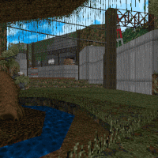

DNBNO5 | WIP | FNA
Short for "drum and break", it is a 2D precision platformer
where each zone has a unique mechanic. Inspired by Duck
Game's complicated movement tech.
NOBODY TOLD ME ABOUT ID2020 | GZDoom
Makes DOOM feel more like a Build Engine game by
replicating quirks from Duke Nukem 3D, PowerSlave, Blood
and Shadow Warrior.
Won one of the
2020 Cacowards
on Doomworld in the Gameplay mod category.

CHALLENJOURED: TOURWIP | MBF21
A short 3-episode WAD for MBF21-compatible DOOM source
ports with new monsters and bizarre maps designed by me and
my friends.
PROJECT NIGHTMARENightmare Club | WIP | GameMaker
A proof-of-concept remake of Adrien Dittrick's Nintendo
Nightmare that also happens to have local and online
multiplayer with up to 4 players.